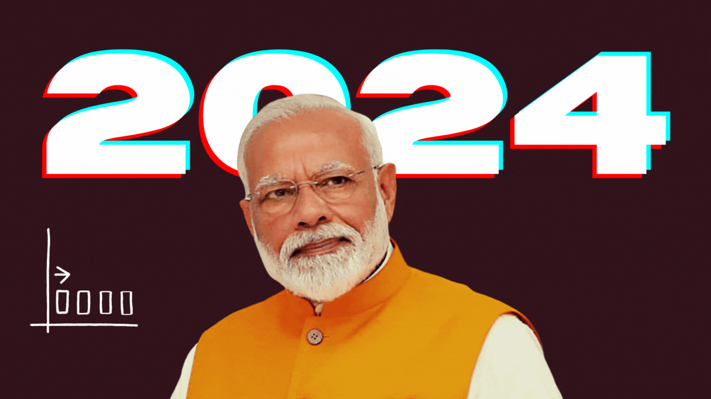

In this interactive, you get to draw how you think India's press freedom graph has shaped up in the past decade. Will your estimates be correct? You'll soon find out.
As the world's largest democracy conducts its biggest election ever, here is a test of your knowledge of how India has performed on press freedom in the past decade. (GIF: Meghnad Bose)
The world's largest democracy is conducting the largest election ever held. There are 970 million eligible voters in this Indian parliamentary election, almost thrice the entire population of the United States of America.
And for any functioning democracy, the role of the press is crucial. So, how has India performed on press freedom in the past decade that Prime Minister Narendra Modi and his Hindu nationalist Bharatiya Janata Party have been in power?
How accurately can you draw India's trajectory on the global press freedom index compiled by Reporters Without Borders? Remember, the higher the ranking, the lesser the press freedom.
Just over the course of Modi's second term as Prime Minister from 2019 to 2024, India's rank has slid from 140 to 161 out of 180 countries. It fell from 140 in 2019 to 142 over the next two years, and then further slid down to 150 in 2022 before falling another 11 spots in 2023.
Kunal Majumder, India Representative on the Committee To Protect Journalists (CPJ) says, “Press freedom in India is at a critical crossroads, facing alarming challenges that have emerged in the last five years. Under the current administration, political polarization has infiltrated the media landscape, with critics being branded as 'anti-national' and broadcasters warned against airing 'anti-national' content.”
Majumder adds, “Government requests to platforms like X, Facebook, Instagram, and YouTube for content censorship have skyrocketed, with India leading in global Youtube video takedowns from October to December 2023.”
__________
Take a look at my other data stories here.